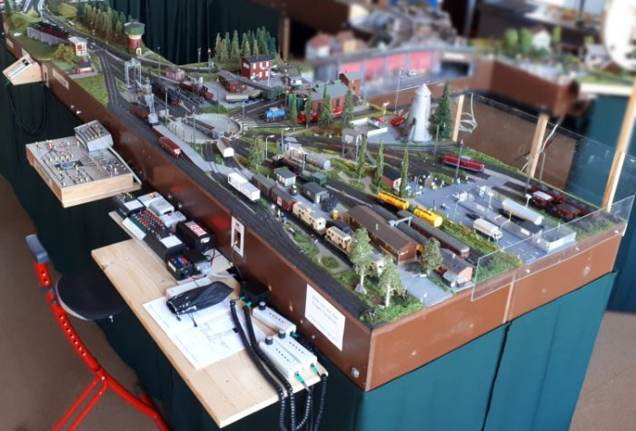

Krümelbahn
KrümelbahnModulbau

Bereits seit längerem baue ich Module in Anlehnung an die FREMO-Norm,
genauer: mit Modulenden H0-Europa, Kopfprofil H0 B96 (Details und weitere Informationen).
Hinweis: das aktuelle H0-Bergprofil B02 passt im Bereich des Bahndamms nicht zum Profil B96!
Die Module, im Kern das Bw Michelstadt, repräsentieren eine Nebenbahnstrecke in Epoche III, die Signalisierung ist daher auch sehr einfach gehalten.
Eine kleine Signalkunde gibt es hier:
.
Seit Oktober 2004 werden mein Fahrzeugpark und meine Module komplett auf DCC-Steuerung umgestellt (Modulbau unter DCC).

Das Bw Michelstadt im August 2022.
Meine Module waren bereits auf verschiedenen Veranstaltungen zu sehen (chronologisch):
- Modellbahntage der FdE-Burscheid, 3. und 4. November 2007
- 6. Cronenberger Modelleisenbahntage, 31. Mai und 1. Juni 2008
- 7. Cronenberger Modelleisenbahntage, 28. Februar und 1. März 2009
- 8. Cronenberger Modelleisenbahntage, 6. und 7. Februar 2010
- 9. Cronenberger Modelleisenbahntage, 19. und 20. Februar 2011
- 3. Modellbahnausstellung des cmt in Langerfeld, 7. Mai 2011
- Tag der offenen Tür, DRK-Wersten, 10. September 2011
- 10. Cronenberger Modelleisenbahntage, 17. und 18. März 2012
- 4. Modellbahnausstellung des cmt in Langerfeld, 5. Mai 2012
- Modellbahntage der FdE-Burscheid, 12. und 13. Mai 2012 im Sensenhammer, Leverkusen
- 11. Internationale Modellbahntage des MEC Lahnstein, 16. und 17. Februar 2013
- 11. Cronenberger Modelleisenbahntage, 2. und 3. März 2013
- 5. Modellbahnausstellung des cmt in Langerfeld, 3. und 4. Mai 2013
- 13. Cronenberger Modelleisenbahntage, 28. Februar und 1. März 2015
- 7. Modellbahnausstellung des cmt in Langerfeld, 1. und 2. Mai 2015
- 15. Cronenberger Modelleisenbahntage, 18. und 19. Februar 2017
- 9. Modellbahnausstellung des cmt in Langerfeld, 1. und 2. September 2017
- 16. Cronenberger Modelleisenbahntage, 3. und 4. März 2018
- 10. Modellbahnausstellung des cmt in Langerfeld, 7. und 8. September 2018
- 1. Leichlinger Modelleisenbahntage, 2. bis 4. November 2018
- Modelleisenbahntage beim Haaner-Sommer in Haan, 24. und 25. August 2019
- 2. Leichlinger Modelleisenbahntage, 8. bis 10. November 2019
- 18. Cronenberger Modelleisenbahntage, 29. Februar und 1. März 2020
- 3. Leichlinger Modelleisenbahntage, 13. und 14. August 2022
- Modellbahntage 2022 im Lokschuppen Erkrath-Hochdahl, 4. bis 6. November 2022
- Modelleisenbahntage beim Haaner-Sommer in Haan, 24. und 25. Juni 2023
- 4. Leichlinger Modelleisenbahntage, 19. und 20. August 2023
- Modellbahntage 2023 im Lokschuppen Erkrath-Hochdahl, 1. und 4. bis 6. November 2023
- Modelleisenbahntage beim Haaner-Sommer in Haan, 13. und 14. Juli 2024
- Modellbahntage 2024 im Lokschuppen Erkrath-Hochdahl, 1. bis 3. November 2024
- 23. Eisenbahntage 2026 in der Ev. Kirchengemeinde Wuppertal-Cronenberg, 28. und 29. März 2026
- Modellbahntage 2026 im Lokschuppen Erkrath-Hochdahl, 30. Oktober bis 1. November 2026

Modulübersicht
Das Bahnbetriebswerk Michelstadt ist ein (fiktives) typisches Klein-Bahnbetriebswerk an einer Nebenbahnstrecke irgendwann in den 1960er Jahren. Dampflokomotiven beherrschen noch das Bild, Akkutriebwagen füllen hier ihre Batterien ebenso, wie Diesellokomotiven ihre Tanks. Die dem Bw angeschlossene Signalwerkstadt hat gut zu tun: ist sie doch für die angrenzende Strecke zuständig.Seine Hauptblütezeit hatte das Bw, als im Michelstädter Hafen (direkt am Michelstädter Kanal) noch Güterumschlag stattfand.
Attraktiver Ausflugspunkt ist der inzwischen restaurierte Römerturm.
| Modul | Abmessung (L * B) |
kleinster Radius (mm) | Weichen/ Signale |
|---|---|---|---|
Bw Michelstadt in einem 90°-(Außen)Bogen  SkizzeBild SkizzeBild |
3m*1m | abzweigender Bogen: 650 im Bw: 480 |
14/4 |
| Streckenmodul Kanalüberquerung Michelstädter Kanal SkizzeBild |
1,2m*0,5m | ∞ |
-/- |
| Signalmodul; S/N-Wender Skizze verbindet zwei linke Modulseiten miteinander |
0,2m*0,5m | ∞ |
-/(2) |
| Streckenmodul Römerturm; N/S-Wender SkizzeBild verbindet zwei rechte Modulseiten miteinander |
0,3m*0,5m | ∞ |
-/(1) |
| Streckenmodul mit Signal; Trassenbrett ohne Fremo-Kopf SkizzeBild |
1m*0,15m | ∞ |
-/(2) |
| Kurvenmodul 90°; Trassenbrett ohne Fremo-Kopf SkizzeBild |
1m*0,3m | 560 | -/- |
){kind=link}
){kind=link}
;){kind=link}
){kind=link}
;){kind=link}
;){kind=link}
){kind=link}
;){kind=link}
){kind=link}
;){kind=link}
){kind=link}
Was sich sonst noch so bewährt hat
- Begrasungsgerät
- Für die Landschaftsgestaltung: Silikonformen aus der Werkstatt Spörle für die Herstellung von Gipsabdrücken
Ablage für Handregler
Oftmals stellt sich die Frage: wo lege ich nicht benötigte Handregler eigentlich ab?Auf den Modulen? Aber bitte nicht, wenn diese gestaltet sind!
Auf einem Tisch oder Stuhl? Steht nicht immer zur Verfügung...
Eine Ablage muss her! Harald Brosch bietet Ablagen als Bausätze an, aber Nachdenken und Eigeninitiative helfen auch.
Meine Fred(I)-Ablage sieht so aus:
Wagenkarten
Schon wieder etwas Neues? Eigentlich nicht: hierbei handelt es sich lediglich um Karten für jedes Fahrzeug.
Jeder der ein Fahrzeug - gleichgültig ob Lok oder Wagen - zu einem Modultreffen mitbringt, hat auch eine entsprechende Fahrzeugkarte bereit zu stellen, für Triebfahrzeuge sind zusätzlich "FRED-Karten" erforderlich.
Dies erleichtert den Betrieb, da man somit sehr leicht im Betrieb
- Fahrzeuge zuordnen kann,
- sieht, welche Lok dem FRED zugeordnet ist,
- Frachtaufträge erstellen kann und sieht, ob der Wagen geignet ist,
- ...
Epoche III
1945~1970Wiederaufbau nach dem Krieg und Entwicklung eines modernen Fahrzeugparkes. Traktionswechsel durch Ausbau des elektrischen Betriebes und der Dieselzugförderung.
Literatur:
- Modellbahnpraxis Spezial
Module - Dioramen - Segmente
2003, ISBN 3870956982 - Miba Spezial Heft 52
Module und Segmente
2002 - Miba Spezial Heft 78
Module und Segmente
2008